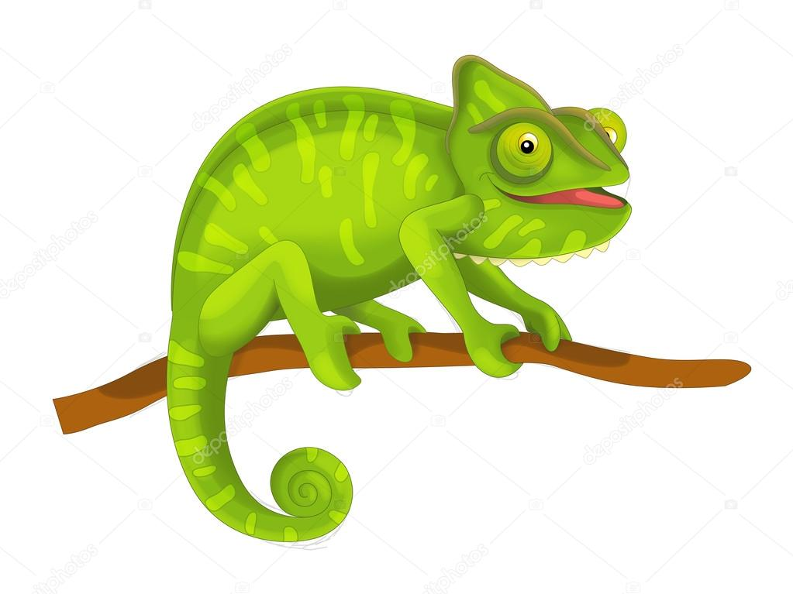
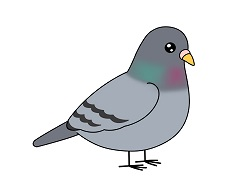

Origami Designs
About Us
Follow Us

Interesting Facts About Chameleon
- Chameleons are reptiles that are part of the iguana suborder
- Changine skin color is an important part of communication among chameleons
- Most chameleons have a prehensive tail that they use to wrap around tree branches

Click Here☝
Interesting Facts about Pigeon
- Pigeons are incredibly complex and intelligent animals
- Pigeons are reowned for their outstanding navigational abilities
- Pigeons have excellent hearing abilities
Click Here☝
Interesting Facts about Camel
- Camels have three sets of eyelids and two rows of eyelashes to keep sand out of their eyes.
- Camels have thick lips which let them forage for thorny plants other animals can’t eat.
- Camels can completely shut their nostrils during sandstorms.

Click Here☝
Interesting Facts about Teddy Bear
- Bears are extraordinarily intelligent animals.
- Bears grieve deeply for others.
- Bears have excellent senses of smell, sight and hearing.
Click Here☝
Interesting Facts about Panda
- Pandas go from pink to white and black (or brown).
- Pandas have so many fans because they look cute.
- Pandas are "lazy" — eating and sleeping make their day.

Click Here☝
Interesting Facts about Flying Cicada
- Cicadas can survive a huge fal
- The loud whirring or buzzing sound you hear is an all-male cicada chorus .
- Females may be attracted to the sound of motors.